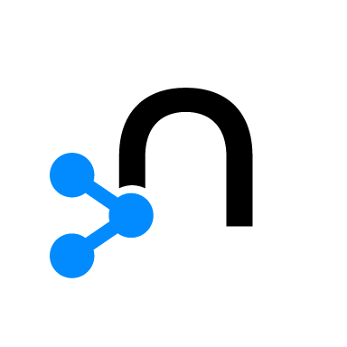
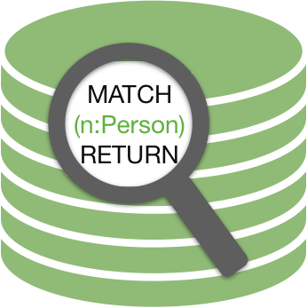

Log files created by neo4j version 4+ with the query log in VERBOSE mode also have log entries when queries are started.
In this tab we show the queries which are started but not finished at the moment the log is copied and uploaded or streamed.
A connection with admin rights to a database with version 3.2 and higher is needed to use this function.
|